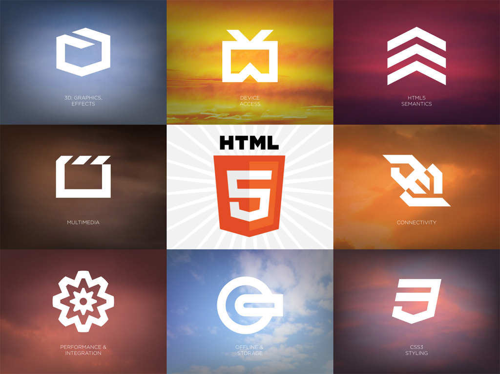
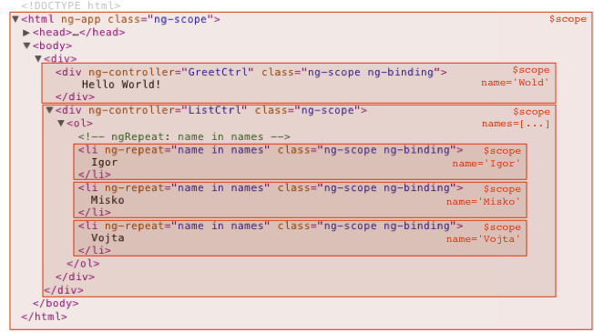

HTML5
Hypertext Markup Language Version 5
Created by hmchung / @tma.com.vn
Themes
Default -
Sky -
Beige -
Simple -
Serif -
Night
Moon -
Solarized
Transition Styles
Cube - Page - Concave - Zoom - Linear - Fade - None - Default
Rough Timeline of Web Technologies
| 1991 | HTML |
| 1994 | HTML 2 |
| 1996 | CSS + JavaScript |
| 1997 | HTML 4 |
| 1998 | CSS2 |
| 2000 | XHTML 1 |
| 2002 | Tableless Web Design |
| 2005 | AJAX |
| 2009 | HTML5 + CSS3 |
What is HTML5?
- It’s open source.
- Standard technology (WHATWG + W3C).
- Successor of HTML v4.01 & XHTML v1.0
HTML5
~=
HTML
+ CSS
+ JS
Key Features of HTML5
Feature tag
Browsers

Today, we will cover ...
- Offline / Storage
- Realtime / Communication
- File / Hardware Access
- Semantics & Markup
- Graphucs / Multimedia
- CSS3
- Nuts & Bolts
Offline / Storage

Web Storage
//LocalStorage Methods:
//getItem: Retrieves the current value associated with the key.
window.localStorage.getItem(key)
//setItem: Set a key/value pair
window.localStorage.setItem(key, value);
//removeItem: Deletes a key/value pair from the DOM Storage collection
window.localStorage.removeItem(key)
//clear: Removes all key/value pairs from the DOM Storage area.
window.localStorage.clear();
//Key: Retrieves the key at the specified index in the collection
window.localStorage.key(n)
//length: Retrieves the length of the key/value list
constructor: Returns a reference to the contructor
window.localStorage.contructor !== Storage
Web SQL Database
var db = window.openDatabase("DBName", "1.0", "description", 5*1024*1024); //5MB
db.transaction(function(tx) {
tx.executeSql("SELECT * FROM test", [], successCallback, errorCallback);
});
IndexedDB
var idbRequest = window.indexedDB.open('Database Name');
idbRequest.onsuccess = function(event) {
var db = event.srcElement.result;
var transaction = db.transaction([], IDBTransaction.READ_ONLY);
var curRequest = transaction.objectStore('ObjectStore Name').openCursor();
curRequest.onsuccess = ...;
};
Application Cache
index.html
< html manifest="cache.appcache" >
main.js
window.applicationCache.addEventListener('updateready', function(e) {
if (window.applicationCache.status == window.applicationCache.UPDATEREADY) {
window.applicationCache.swapCache();
if (confirm('A new version of this site is available. Load it?')) {
window.location.reload();
}
}
}, false);
cache.appcache:
CACHE MANIFEST
# version 1.0.0
CACHE:
/html5/src/logic.js
/html5/src/style.css
/html5/src/background.png
NETWORK:
*
Turn off your internet connection and refresh this page!
Quota API
main.js
// Request Status
webkitStorageInfo.queryUsageAndQuota(webkitStorageInfo.TEMPORARY, function(used, remaining) {
console.log("Used quota: " + used + ", remaining quota: " + remaining);
}
);
// Request Quota (only for File System API)
webkitStorageInfo.requestQuota(webkitStorageInfo.PERSISTENT, 10 * 1024 * 1024, function(used) {
console.log("Used quota: " + used + ", remaining quota: " + remaining);
}
);
Realtime / Communication

Web Workers
main.js
var worker = new Worker('task.js');
worker.onmessage = function(event) { alert(event.data); };
worker.postMessage('data');
task.js
self.onmessage = function(event) {
// Do some work.
self.postMessage("recv'd: " + event.data);
};
WebSocket
main.js
var socket = new WebSocket('ws://html5rocks.websocket.org/echo');
socket.onopen = function(event) {
socket.send('Hello, WebSocket');
};
socket.onmessage = function(event) { alert(event.data); }
socket.onclose = function(event) { alert('closed'); }
Notifications
main.js
if (window.webkitNotifications.checkPermission() == 0) {
// you can pass any url as a parameter
window.webkitNotifications.createNotification(tweet.picture, tweet.title,
tweet.text).show();
} else {
window.webkitNotifications.requestPermission();
}
File / Hardware Access

Native Drag & Drop
main.js
document.addEventListener('dragstart', function(event) {
event.dataTransfer.setData('text', 'Customized text');
event.dataTransfer.effectAllowed = 'copy';
}, false);
Geolocation
main.js
if (navigator.geolocation) {
navigator.geolocation.getCurrentPosition(function(position) {
var latLng = new google.maps.LatLng(
position.coords.latitude, position.coords.longitude);
var marker = new google.maps.Marker({position: latLng, map: map});
map.setCenter(latLng);
}, errorHandler);
}
Semantics & Markup

Directives
Expression
- Angular expressions are JavaScript-like code snippets that are usually placed in bindings such as
{{ expression }}.
Total in dollar: {{ quantity * cost }}
Services
{{callNotify()}}
Scope
Scope is an object that refers to the application model. It is an execution context for expressions. Scopes are arranged in hierarchical structure which mimic the DOM structure of theapplication.
Scope Hierarchies
Each Angular application has exactly one root scope, but may have several child scopes. 
Routing
Is used for deep-linking URLs to controllers and views (HTML partials). It watches $location.url() andtries to map the path to an existing route definition.
angular.module('myApp', [])
.config(['$routeProvider', function ($routeProvider) {
$routeProvider
.when('/', {
templateUrl: 'views/main.html',
controller: 'MainCtrl'
})
.when('/newcomer',{
templateUrl: 'views/newcomer/newcomer.html',
controller: 'newcomerCtrl'
})
.when('/newcomer/:id',{
templateUrl: 'views/report-table/report-table.html',
controller: 'reportCtrl'
})
.otherwise({
redirectTo: '/'
});
}])
Forms
Controls (input, select, textarea) are ways for a user to enter data. A Form is a collection of controls for the purpose of grouping related controls together.
Dependency Injection
Dependency Injection (DI) is a software design pattern that deals with how code gets holdof its dependencies.
{{ firstName + " " + lastName }}
Filters
AngularJS filters can be used to transform data:
| Filter | Description |
|---|---|
| currency | Format a number to a currency format. |
| filter | Select a subset of items from an array. |
| lowercase | Format a string to lower case. |
| orderBy | Orders an array by an expression. |
| uppercase | Format a string to upper case. |
Filters
-
{{ (x.name | uppercase) + ', ' + x.country }}
Videos
Code Organization
Help
- StackOverflow: http://stackoverflow.com/questions/tagged/angularjs
- AngularJS Mailing List (Google Groups): http://groups.google.com/group/angular
Courses
- Code School Shaping Up with Angular.js: https://www.codeschool.com/courses/shaping-up-with-angular-js
- Thinkster.io - A better way to learn AngularJS: http://www.thinkster.io/
Development Environment
- Bootstrap
- Karma(unit test runnter)
- Internet browsers
- Chrome add-on: batarang
- Webstorm